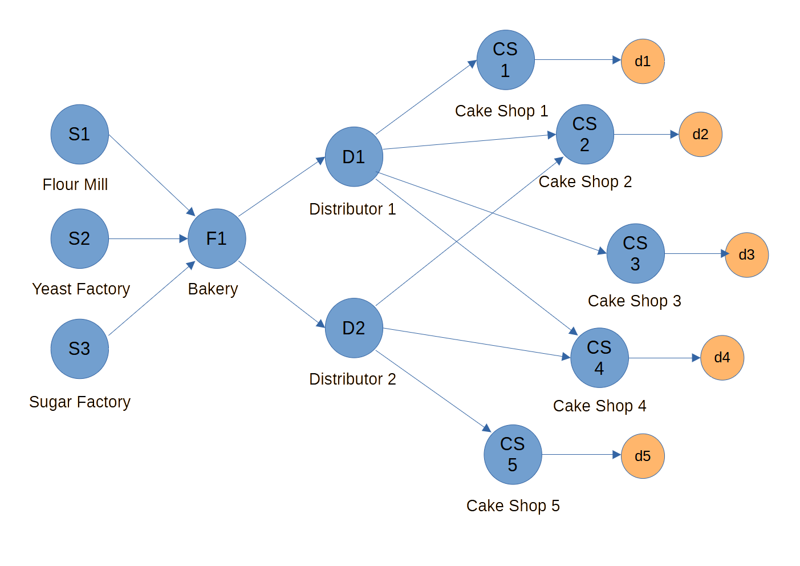

Complex Supply Chain Network
This example shows how to build and simulate a larger supply chain in SupplyNetPy, with several levels and with retailers that can order from more than one distributor, using a mix of replenishment policies. Three raw-material suppliers (a flour mill, a yeast factory and a sugar factory) supply a manufacturer (a bakery), the bakery supplies two distributors, and the distributors supply five retailers (cake shops). In the picture, cake shops 2 and 4 can order from either distributor.

Goals
- Create a network with several raw materials, three raw-material suppliers, a manufacturer, two distributors and five retailers.
- Mix replenishment policies ((s, S), (R, Q) and periodic).
- Let some retailers order from either of two distributors.
Key Concepts Used
- Products and raw materials. The class
Productcreates the product, bread.RawMaterialcreates the raw materials (flour, sugar and yeast). - Nodes. The classes
Supplier,ManufacturerandInventoryNodecreate the raw-material suppliers (infinite suppliers here), the bakery (a manufacturer), the distributors and the retailers (cake shops). - Links. The class
Linkconnects the sites. - Replenishment policies.
SSReplenishment. When the inventory position falls to s or below, order enough to bring it back up to S.RQReplenishment. When the inventory position falls to the reorder point R or below, order a fixed Q units.PeriodicReplenishment. Every T time units, order Q units.
- Supplier selection. Each cake shop chooses between its suppliers with
SelectFirstorSelectAvailable. - Perishable goods. Every site that holds bread has
inventory_typeset toperishable, with ashelf_lifeof 5 time units.
Full Example
This script builds the network with two distributors and five retailers, then simulates it for 365 time units.
import SupplyNetPy.Components as scm
import simpy
import numpy as np
# Same random numbers on every run
np.random.seed(42)
class Distributions:
def __init__(self, lam=5, mu=5, low=1, high=10):
self.lam = lam
self.mu = mu
self.low = low
self.high = high
def poisson_arrival(self):
return np.random.exponential(scale=1/self.lam)
def uniform_quantity(self):
return int(np.random.uniform(low=self.low, high=self.high))
env = simpy.Environment()
# ------------------- Raw Materials -------------------
flour = scm.RawMaterial(ID='flourk11', name='Flour', extraction_quantity=50,
extraction_time=1, mining_cost=10, cost=2.5)
sugar = scm.RawMaterial(ID='sugark21', name='Sugar', extraction_quantity=30,
extraction_time=1, mining_cost=8, cost=1.4)
yeast = scm.RawMaterial(ID='yeast31', name='Yeast', extraction_quantity=20,
extraction_time=1, mining_cost=3, cost=0.2)
# ------------------- Suppliers -------------------
flour_mill = scm.Supplier(env=env, ID='fmill', name='Flour Mill',
node_type='infinite_supplier', raw_material=flour, logging=False)
sugar_factory = scm.Supplier(env=env, ID='sfact', name='Sugar Factory',
node_type='infinite_supplier', raw_material=sugar, logging=False)
yeast_factory = scm.Supplier(env=env, ID='yfact', name='Yeast Factory',
node_type='infinite_supplier', raw_material=yeast, logging=False)
# ------------------- Manufacturer -------------------
bread = scm.Product(ID='soft_regular11', name='Bread', manufacturing_cost=10, manufacturing_time=1,
sell_price=40, raw_materials=[(flour, 30), (sugar, 15), (yeast, 15)], batch_size=300)
bakery = scm.Manufacturer(env=env, ID='bakery', name='Bakery', product=bread, shelf_life=5,
inventory_type='perishable', capacity=500, initial_level=100,
inventory_holding_cost=0.5, replenishment_policy=scm.SSReplenishment,
policy_param={'s':300,'S':400}, product_sell_price=35, logging=False)
# ------------------- Distributors -------------------
distributor1 = scm.InventoryNode(env=env, ID='dist1', name='Distributor 1', node_type='distributor', product=bread,
inventory_type='perishable', shelf_life=5,
capacity=float('inf'), initial_level=50, inventory_holding_cost=0.2,
replenishment_policy=scm.RQReplenishment, policy_param={'R':150,'Q':50},
product_buy_price=0, product_sell_price=36, logging=False)
distributor2 = scm.InventoryNode(env=env, ID='dist2', name='Distributor 2', node_type='distributor', product=bread,
inventory_type='perishable', shelf_life=5,
capacity=float('inf'), initial_level=40, inventory_holding_cost=0.25,
replenishment_policy=scm.SSReplenishment, policy_param={'s':150,'S':200},
product_buy_price=0, product_sell_price=37, logging=False)
# ------------------- Retailers -------------------
cake_shops = []
capacities = [40,60,80,60,100]
ini_levels = [30,20,30,20,50]
policies = [scm.RQReplenishment, scm.PeriodicReplenishment, scm.SSReplenishment, scm.RQReplenishment, scm.PeriodicReplenishment]
policy_params = [{'R':20,'Q':40}, {'T':3,'Q':50}, {'s':20,'S':50}, {'R':20,'Q':40}, {'T':3,'Q':100}]
supplier_selection = [scm.SelectFirst,scm.SelectAvailable,scm.SelectFirst,scm.SelectAvailable,scm.SelectFirst]
for i in range(0,5):
shop = scm.InventoryNode(env=env, ID=f'cake_shop{i+1}', name=f'Cake Shop {i+1}', node_type='retailer', product=bread,
inventory_type='perishable', shelf_life=5,
capacity=capacities[i], initial_level=ini_levels[i], inventory_holding_cost=0.1,
replenishment_policy=policies[i], policy_param=policy_params[i],
supplier_selection_policy=supplier_selection[i],
product_buy_price=25, product_sell_price=40, logging=False)
cake_shops.append(shop)
# ------------------- Links -------------------
links = []
# Raw material links, suppliers to bakery
suppliers = [flour_mill, sugar_factory, yeast_factory]
costs = [5, 6, 5]
for i in range(3):
links.append(scm.Link(env=env, ID=f'l{i+1}', source=suppliers[i], sink=bakery, cost=costs[i], lead_time=lambda: 0.3))
# Bakery → Distributors
links.append(scm.Link(env=env, ID='l4', source=bakery, sink=distributor1, cost=6, lead_time=lambda: 1))
links.append(scm.Link(env=env, ID='l5', source=bakery, sink=distributor2, cost=7, lead_time=lambda: 1.2))
# Distributor 1 → Shops 1, 2, 3
for i in range(0,3):
link = scm.Link(env=env, ID=f'l{i+6}', source=distributor1, sink=cake_shops[i], cost=4, lead_time=lambda i=i: 0.4 + i*0.1)
links.append(link)
# Distributor 2 → Shops 4, 5
for i in range(3,5):
link = scm.Link(env=env, ID=f'l{i+6}', source=distributor2, sink=cake_shops[i], cost=5, lead_time=lambda: 0.5)
links.append(link)
# Distributor 1 → Shop 4, Distributor 2 → Shop 2
links.append(scm.Link(env=env, ID='l11', source=distributor1, sink=cake_shops[3], cost=8, lead_time=lambda: 0.5))
links.append(scm.Link(env=env, ID='l12', source=distributor2, sink=cake_shops[1], cost=6, lead_time=lambda: 0.8))
# ------------------- Demands -------------------
arrival = Distributions(lam=5)
quantity = Distributions(low=1, high=5)
demands = []
for i in range(5):
demands.append(scm.Demand(env=env, ID=f'd{i+1}', name=f'Demand Shop {i+1}', order_arrival_model=arrival.poisson_arrival,
order_quantity_model=quantity.uniform_quantity, demand_node=cake_shops[i], logging=False))
# ------------------- Network -------------------
bread_chain = scm.create_sc_net(
env=env,
nodes=[flour_mill, sugar_factory, yeast_factory, bakery,
distributor1, distributor2,
*cake_shops],
links=links,
demands=demands
)
scm.simulate_sc_net(bread_chain, sim_time=365, logging=True)
print("---- Node-wise performance ----\n---- ---- Suppliers and Bakery---- ----")
scm.print_node_wise_performance([flour_mill, sugar_factory, yeast_factory, bakery])
print("\n---- ---- Distributors ---- ----")
scm.print_node_wise_performance([distributor1, distributor2])
print("\n---- ---- Retail Shops ---- ----")
scm.print_node_wise_performance(cake_shops)
Sample Output
INFO sim_trace - Supply chain info:
INFO sim_trace - available_inv : 505
INFO sim_trace - avg_available_inv : 0
INFO sim_trace - avg_cost_per_item : 2.1394786900921177
INFO sim_trace - avg_cost_per_order : 549.6946952365308
INFO sim_trace - backorders : [0, 0]
INFO sim_trace - demand_by_customers : [9252, 23108]
INFO sim_trace - demand_by_site : [2836, 3082653]
INFO sim_trace - demands : {'d1': Demand Shop 1, 'd2': Demand Shop 2, 'd3': Demand Shop 3, 'd4': Demand Shop 4, 'd5': Demand Shop 5}
INFO sim_trace - env : <simpy.core.Environment object at 0x00000278E4301090>
INFO sim_trace - fulfillment_received_by_customers : [5520, 13657]
INFO sim_trace - fulfillment_received_by_site : [2832, 3082453]
INFO sim_trace - inventory_carry_cost : 48490.47601918524
INFO sim_trace - inventory_spend_cost : 6085795.0
INFO sim_trace - inventory_waste : 35528
INFO sim_trace - links : {'l1': fmill to bakery, 'l2': sfact to bakery, 'l3': yfact to bakery, 'l4': bakery to dist1, 'l5': bakery to dist2, 'l6': dist1 to cake_shop1, 'l7': dist1 to cake_shop2, 'l8': dist1 to cake_shop3, 'l9': dist2 to cake_shop4, 'l10': dist2 to cake_shop5, 'l11': dist1 to cake_shop4, 'l12': dist2 to cake_shop2}
INFO sim_trace - nodes : {'fmill': Flour Mill, 'sfact': Sugar Factory, 'yfact': Yeast Factory, 'bakery': Bakery, 'dist1': Distributor 1, 'dist2': Distributor 2, 'cake_shop1': Cake Shop 1, 'cake_shop2': Cake Shop 2, 'cake_shop3': Cake Shop 3, 'cake_shop4': Cake Shop 4, 'cake_shop5': Cake Shop 5}
INFO sim_trace - num_distributors : 2
INFO sim_trace - num_manufacturers : 1
INFO sim_trace - num_of_links : 12
INFO sim_trace - num_of_nodes : 11
INFO sim_trace - num_retailers : 5
INFO sim_trace - num_suppliers : 3
INFO sim_trace - profit : -2681850.476019185
INFO sim_trace - revenue : 3962859
INFO sim_trace - shortage : [3916, 14762]
INFO sim_trace - total_cost : 6644709.476019185
INFO sim_trace - total_demand : [12088, 3105761]
INFO sim_trace - total_fulfillment_received : [8352, 3096110]
INFO sim_trace - transportation_cost : 14924
---- Node-wise performance ----
---- ---- Suppliers and Bakery---- ----
Performance Metric Flour Mill Sugar Factory Yeast Factory Bakery
backorder [0, 0] [0, 0] [0, 0] [0, 0]
demand_fulfilled [349, 1493400] [349, 746700] [349, 746700] [763, 49350]
demand_placed [0, 0] [0, 0] [0, 0] [1047, 2986800]
demand_received [349, 1493400] [349, 746700] [349, 746700] [765, 49480]
destroyed_qty 0 0 0 0
destroyed_value 0 0 0 0
fulfillment_received [0, 0] [0, 0] [0, 0] [1047, 2986800]
inventory_carry_cost 0 0 0 30075.92740021967
inventory_level 0 0 0 170
inventory_spend_cost 0 0 0 4928220.0
inventory_waste 0 0 0 0
name fmill statistics sfact statistics yfact statistics bakery statistics
node_cost 0 0 0 5459379.927400219
profit 3733500.0 1045379.9999999999 149340.0 -3732129.9274002193
revenue 3733500.0 1045379.9999999999 149340.0 1727250
shortage [0, 0] [0, 0] [0, 0] [61, 2141]
total_material_cost 0 0 0 N/A
total_raw_materials_mined0 0 0 N/A
transportation_cost 0 0 0 5584
---- ---- Distributors ---- ----
Performance Metric Distributor 1 Distributor 2
backorder [0, 0] [0, 0]
demand_fulfilled [636, 23882] [386, 22421]
demand_placed [498, 24900] [267, 24580]
demand_received [637, 23912] [387, 22461]
destroyed_qty 0 0
destroyed_value 0 0
fulfillment_received [497, 24850] [266, 24500]
inventory_carry_cost 5945.791776500316 8872.313638179628
inventory_level 120 120
inventory_spend_cost 0 0
inventory_waste 868 1959
name dist1 statistics dist2 statistics
node_cost 8933.791776500315 10741.313638179628
profit 850818.2082234997 818835.6863618203
revenue 859752 829577
shortage [59, 1548] [64, 1720]
transportation_cost 2988 1869
---- ---- Retail Shops ---- ----
Performance Metric Cake Shop 1 Cake Shop 2 Cake Shop 3 Cake Shop 4 Cake Shop 5
backorder [0, 0] [0, 0] [0, 0] [0, 0] [0, 0]
demand_fulfilled [1495, 3693] [749, 1839] [1373, 3395] [1280, 3179] [623, 1551]
demand_placed [286, 8491] [122, 5977] [229, 9444] [265, 10600] [122, 11861]
demand_received [1495, 3693] [749, 1839] [1373, 3395] [1280, 3179] [623, 1551]
destroyed_qty 0 0 0 0 0
destroyed_value 0 0 0 0 0
fulfillment_received [286, 8491] [122, 5977] [228, 9414] [264, 10560] [122, 11861]
inventory_carry_cost 851.4641598062459 460.7647558646054 862.8687633143642 845.5826210075172 575.7629042928984
inventory_level 39 26 16 14 0
inventory_spend_cost 212275 149425 235350 264000 296525
inventory_waste 4789 4132 6033 7387 10360
name cake_shop1 statistics cake_shop2 statistics cake_shop3 statistics cake_shop4 statistics cake_shop5 statistics
node_cost 214270.46415980626 150373.7647558646 237128.86876331436 266170.5826210075 297710.7629042929
profit -66550.46415980626 -76813.7647558646 -101328.86876331436 -139010.58262100752 -235670.7629042929
revenue 147720 73560 135800 127160 62040
shortage [325, 794] [1162, 2899] [495, 1277] [561, 1453] [1189, 2930]
transportation_cost 1144 488 916 1325 610
Suggested Experiments
- Change the
policy_paramvalues (s and S, R and Q, T and Q). - Change the lead times and the link costs.
- Change a retailer's
inventory_typeandshelf_lifeto study perishable goods. - Add or remove links between the distributors and the cake shops to test resilience.
Notes
- Keep node IDs unique.
- Make sure each
product_buy_priceis no more than its supplier'sproduct_sell_price, where that applies. - Use the same time unit for manufacturing times, lead times and review periods.